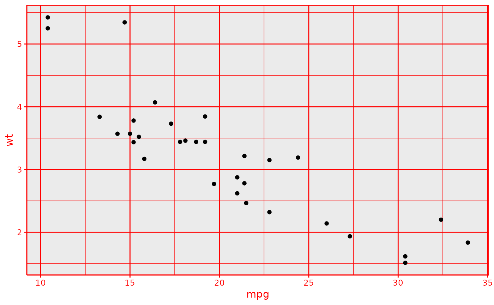

These functions modify specific theme elements of a plot. Be wary that,
contrary the usual "theme" functions (e.g., theme_bw()), these do not
"reset" all current elements, they only modify some of them.
Details
theme_transparent()Sets the background of the plot, panel, and legend to transparent.
theme_element_colour()Sets the colour of all small line and text elements to a specified colour.
Examples
library(ggplot2)
p <- ggplot(mtcars, aes(mpg, wt)) + geom_point()
p + theme_transparent()

p + theme_element_colour("red")
